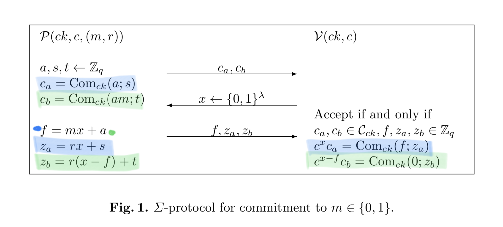
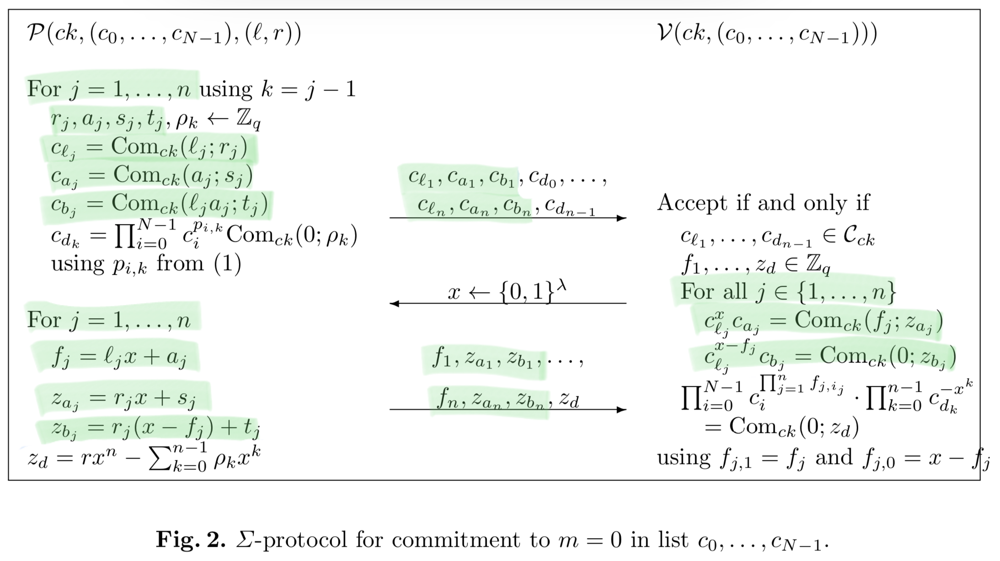
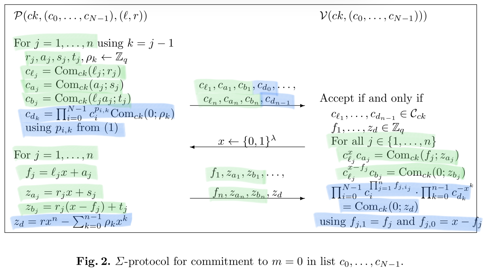

privacy without snarks — one of many proofs
2022-10-21 by Rebekah
Groth and Kohlweiss introduced the concept of one of many proofs in their 2014 paper here, which also proposes the first O(logN) construction of the concept. One of many proofs are at their heart a membership proof, also know as a ring signature. In other words, whereas a normal digital signature attests to the statement ‘I know the private key that corresponds to this public key’, ring signatures prove the statement ‘I know the private key that corresponds to one of the public keys in this list’, without revealing which of the public keys that it is.
Without the privacy requirement, the list of public keys could simply be a list, and the signature proving that the signer knows one of them could simply be a digital signature like ECDSA or edDSA, as is used in many multi-sig accounts. But that reveals which or the public keys the signature corresponds to, and so, would reveal, for example, specific individuals’ spending habits. This could make them, for example, more vulnerable to coercion, etc. So ring signatures keep that information private.
Privacy in the cryptocurrency space, due to either Zcash’s domination of mindshare, or the simpler model of programming with a snark DSL, rather than reading 1 million cryptography papers and implementing things for scratch, and the specialists audits that requires, is often very snark-centric. The main way to do this is to put all the participants public keys into a merkle tree, and then have them prove knowledge of one of the merkle paths and the secret key corresponding to the public key at that leaf. Constructing this within a snark involves a lot of hashing, and traditional hash functions are famously snark-unfriendly.
CUE RING SIGNATURES ;)
At a high level, the way ring signatures work is that there is a challenge based on all of the potential PKs, and then the prover uses their secret information (their sk) to produce a response that will verify against the list of PKs, without revealing which specific PK their sk corresponds to.
It’s difficult to be more specific without sidetracking into sigma protocols for proof of knowledge of a discrete logarithm, but we will try to stay on topic! The first component of their ring signature introduced by Groth and Kohlweiss is a sigma protocol proving a commitment (known to the verifier) is indeed a commitment to zero or one (with the commitment and its randomness known by the prover). The protocol is given below.

The sections highlighted in blue prove knowledge of m, and r. The sections
highlighted in green prove that m is either 0 or 1 — if you instantiate
the commitments with your favourite commitment (pedersen commitments for me :))
the verification equation expands to show that it will verify if m(m-1) == 0,
which is satisfied if and only if m = 0 or m = 1.
The trick of the paper is to write the index of each PK in bits (eg, with 8
PKs, the first is 000, then 001, 010, … up to 111), and then for the
index l that you know the sk corresponding to, first commit to the bits of
the index (this is the c_{l_j}), then prove that each of those is indeed a
commitment to 0 or 1 (using the sigma protocol defined above). This is the
bulk of the written version of the protocol (hahaha – only in terms of how
much space it takes on the page, not in complexity), and is highlighted in
green below.

The remaining steps, highlighted in blue below, are where the more complicated
section of the statement is proven to hold. Having proven that the c_{l_j}
are commitments to zero or one, we now need to prove that we actually know r,
which represents our secret key.

In the protocol, the way this is done is by forming polynomials, with the
leading term appearing only with j = l (if the current index is equal to the
index of the pk for which you know the corresponding sk), then committing to
the coefficients of those polynomials, and then evaluating the polynomial at
the challenge point. The verifier can then construct the same polynomials,
evaluated in the exponent, and the verification equation succeeds iff the two
are equal, which is only possible with knowledge of r.